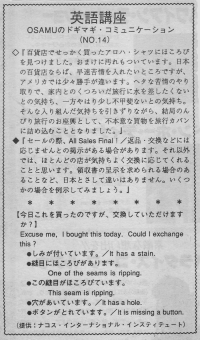

ほころびがあります。
Osamu bought good aloha shirt at the department store. But one of the seams was ripping. It also has a stain. If he were in Japan, he would complain right away. But he was here in the U.S. so the situation was different for him. He had a good time with his wife in Hawaii and if he complained, or got in trouble, their trip would be unhappy. He was afraid about that because he knew he couldn’t make a good negotiation. So he gave up thinking about returning the shirt. He just left it in his suitcase. Japanese people might feel a little hesitant to go back and replace something. Maybe it’s shameful. Americans care more about getting their money’s worth than embarassing themselves. So they will not be hesitant about returning something. They will feel this way only if it’s very inconvenient to go back to that store. Always save your receipt. With the receipt you can return almost anything. If the store is closing, they may have a sign “All sales final” and in this case you must keep all purchases even though it’s defective.
百貨店でせっかく買ったアロハ・シャツに、ほころびをみつけました。おまけに汚れもついています。日本の百貨店ならば、早速、苦情を入れたいところですが、アメリカでは少々勝手が違います。ヘタな苦情のやり取りで、家内とのくつろいだ旅行に水を差したくないという気持ち、一方、やはり少し不甲斐ないという気持ち。そんな入り組んだ気持ちを引きずりながら、結局、のんびり旅行のお座興として、不本意な買物を旅行カバンに詰め込むこととなりました。
セールの際、All Sales Final! 「返品・交換などには応じません」という提示がある場合があります。それ以外では、ほとんどの店が気持ちよく交換に応じてくれることと思います。領収書の提示を求められる場合のあることなど、日本と差して違いはありません。いくつかの場合を例示してみましょう。
今日、これを買ったのですが、交換して頂けますか。
Excuse me, I bought this today. Could I exchange this?
しみが付いています。
It has a stain.
縫目にほころびがあります。
One of the seams is ripping.
穴があいています。
It has a hole.
ボタンがとれています。
It is missing a button.

| © 1995-2013 NACOS International Institute. All Rights Reserved. |